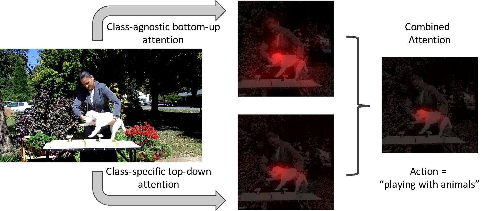
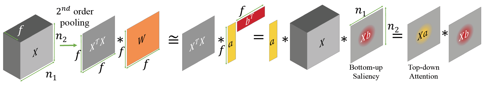
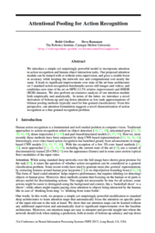

Attentional Pooling for Action Recognition
|  |
| We introduce a simple yet surprisingly powerful model to incorporate attention in action recognition and human object interaction tasks. Our proposed attention module can be trained with or without extra supervision, and gives a sizable boost in accuracy while keeping the network size and computational cost nearly the same. It leads to significant improvements over state of the art base architecture on three standard action recognition benchmarks across still images and videos, and establishes new state of the art on MPII (12.5% relative improvement) and HMDB (RGB) datasets. We also perform an extensive analysis of our attention module both empirically and analytically. In terms of the latter, we introduce a novel derivation of bottom-up and top-down attention as low-rank approximations of bilinear pooling methods (typically used for fine-grained classification). From this perspective, our attention formulation suggests a novel characterization of action recognition as a fine-grained recognition problem. |
|  |
People
|
Rohit Girdhar |
Deva Ramanan |
Paper
|  |
R. Girdhar and D. Ramanan Attentional Pooling for Action Recognition Advances in Neural Information Processing Systems (NIPS), 2017 [arXiv] [code/models] [BibTex] |
Acknowledgements
Authors would like to thank Olga Russakovsky for initial review. This research was supported in part by the National Science Foundation (NSF) under grant numbers CNS-1518865 and IIS-1618903, and the Defense Advanced Research Projects Agency (DARPA) under Contract No. HR001117C0051. Additional support was provided by the Intel Science and Technology Center for Visual Cloud Systems (ISTC-VCS). Any opinions, findings, conclusions or recommendations expressed in this material are those of the authors and do not necessarily reflect the view(s) of their employers or the above-mentioned funding sources.